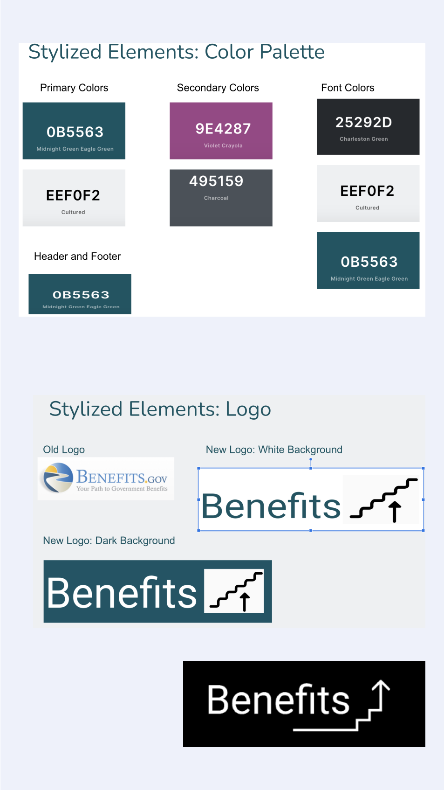

The Solution
Our redesign focused on simplifying the and revitalizing the UI/UX design. Here’s how we did it:
- We created a new color scheme consisting of blues and greens, punctuated with a cheerful pink and purple.
- We reorganized the top navigation to focus on the benefits.
- We eliminated much of the text that was burdening the page and the viewing experience of the visitors.
- We redesigned the logo with a modern touch.
